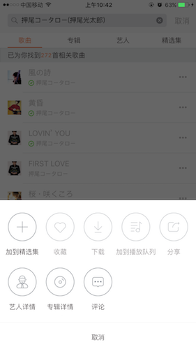
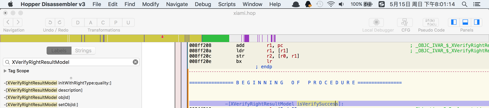
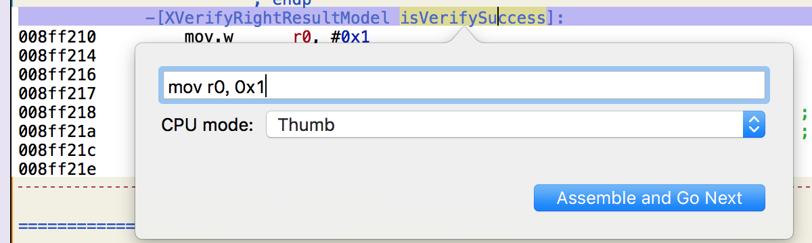
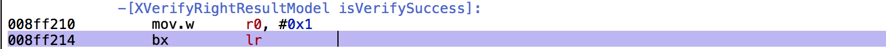
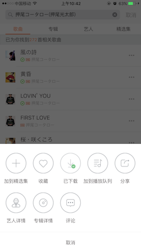

虾米音乐下载版权破解
虾米是我比较喜欢的音乐App之一, 可近期体验不好的一点是, 很多歌曲被下架, 都听不了。 如果是之前加入本地缓存了歌还好, 没缓存的只能看别人听了, 这点让宝宝很是不开心. 好了, 接下来就要来尝试去破解下载它.

无法下载
本文涉及到的工具
1. theos (https://github.com/theos/theos) 下载到/opt/theos
2. hopper (http://pan.baidu.com/s/1qXoIJ1q) 网盘密码:3jgj
3. ldid (http://joedj.net/ldid) 下载ldid，放到/opt/theos/bin/目录底下
非越狱版
ipa
通过pp助手或者同步助手, 下载App的ipa包, 通过解压归档文件, 里面包含了需要逆向的App文件等信息
hopper
有了App的可执行文件, 那我们就可以去做点什么事情了, 将xiami.app拖进hopper里面, 在左上角去搜索
XVerifyRightResultModel这个类, 里面有个isVerifySuccess的Bool类型的变量, 它就是我们要改的值.

查看某个类
下面我们来修改这个isVerifySuccess的返回值为true.
按住键盘上的Option+A, 将值永远返回成true, 0x1

将下一行的值也通过Option+A, 修改换成bx lr

完毕后按住键盘上Shift+Command+E导出可执行文件到桌面, 命名需要跟虾米App里面的可执行文件名字一样, 进入虾米App里面, 替换可执行文件.
大工即将完成
拿到你公司项目或者自己创建一个Demo, 选择好Code Sign编译后, 通过ldid来获取App底下的数据, 但是得保证你手机上安装的证书是有效的.
./ldid -e ./Demo.app/demo
新建Entitlements.plist<?xml version="1.0" encoding="UTF-8"?>
<!DOCTYPE plist PUBLIC "-//Apple//DTD PLIST 1.0//EN" "http://www.apple.com/DTDs/PropertyList-1.0.dtd">
<plist version="1.0">
<dict>
<key>application-identifier</key>
<string>123456.io.github.makezl</string>
<key>com.apple.developer.team-identifier</key>
<string>123456</string>
<key>get-task-allow</key>
<true/>
<key>keychain-access-groups</key>
<array>
<string>123456.io.github.makezl</string>
</array>
</dict>
</plist>
embedded.mobileprovision
进入公司的App, 或者你自己编译好的App里面, 复制embedded.mobileprovision到xiami.app里面
证书名字可以在钥匙串中找到
codesign -f -s “iPhone Developer: YouName” –entitlements Entitlements.plist xiami.app
打包成ipa, 给虾米音乐重新签名后，我们就可以用xcrun来生成ipa了，具体实现如下：xcrun -sdk iphoneos PackageApplication -v xiami.app -o ~/xiami.ipa
通过PP助手安装到你手机上, 就可以啦~~

修改后的虾米音乐
获取App文件: 通过dumpdecrypted砸壳, 网上很多资料讲解, 或者简单一点通过pp助手或者同步助手, 下载App的ipa包, 通过解压归档文件, 里面包含了需要逆向的App文件等信息
分析: 第一步尝试的通过Tweak去修改会员的返回值, 通过hopper搜索isVip这个类型的变量, 发现改了isVip也无法下载, 会员应该是通过服务器同步的.
以上貌似是错误分析
换思路. 从界面入手, 通过Cycript找到下载按钮的位置, 然后一步步去跟踪下载会调用的方法, 最终找到判断是否可以下载的方法, hook掉.
第一步尝试的通过Tweak去修改isVip这个类型的数据, 发现即时改了isVip也无法下载, 应该是通过服务器同步的.
暂时放弃了通过修改vip的办法..
通过Hopper一步步追踪实现找到了XVerifyRightResultModel类, 看到有个属性isVerifySuccess
创建Tweak%hook XVerifyRightResultModel
- (BOOL)isVerifySuccess{
return YES;
}
%end
重新编译Tweak
$ make package install
然后输入ssh的密码安装
修改后的虾米音乐
可以成功下载歌曲, 但是不能直接播放音乐. 有兴趣的童鞋弄好了, 可以告诉我下~
以后不担心歌曲随便下架的问题了 >v<
ps:不逆向虽然可以写逆向的东西, 但是调试起来局限性太大. 简单的修改微信步数, 修改迅雷vip这些通常只需要改一个返回值而已, 复杂的就不行啦.
以上内容仅供学习~ 欢迎交流.